ياسلامYaSalam
أذكارك ومواقيت صلاتك في تطبيق هادئ، مستوحى من جمال الروضة الشريفة.Your adhkar and prayer times in one calm app, inspired by the beauty of Al-Rawdah al-Sharifah.
﴿إِنَّ اللَّهَ وَمَلَائِكَتَهُ يُصَلُّونَ عَلَى النَّبِيِّ ۚ يَا أَيُّهَا الَّذِينَ آمَنُوا صَلُّوا عَلَيْهِ وَسَلِّمُوا تَسْلِيمًا﴾سورة الأحزاب: ٥٦Al-Ahzab 33:56
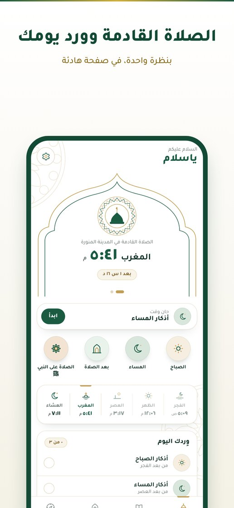
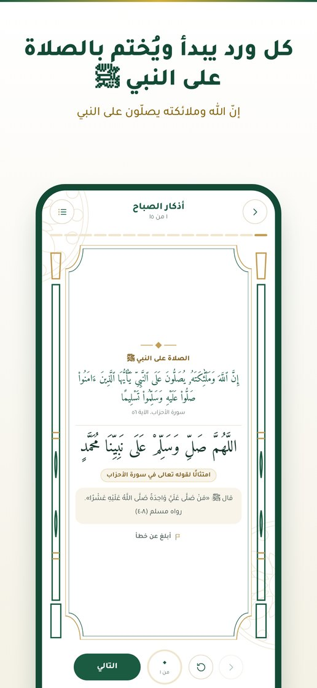
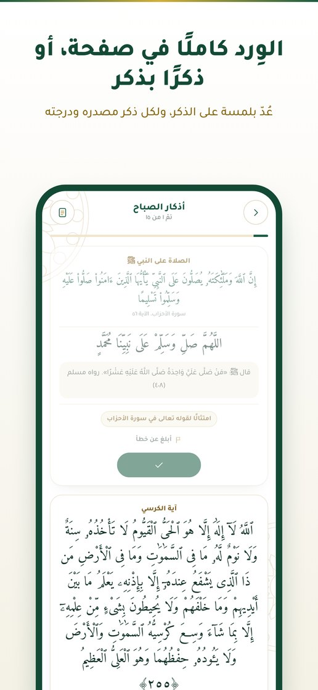
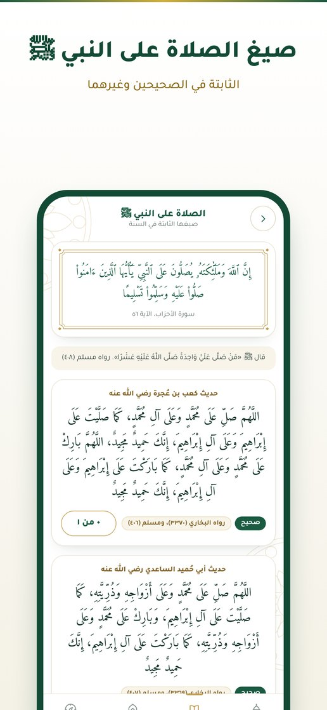
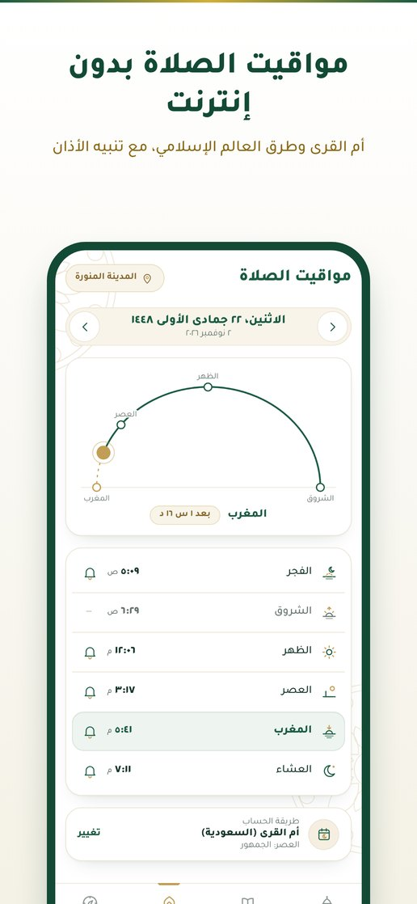
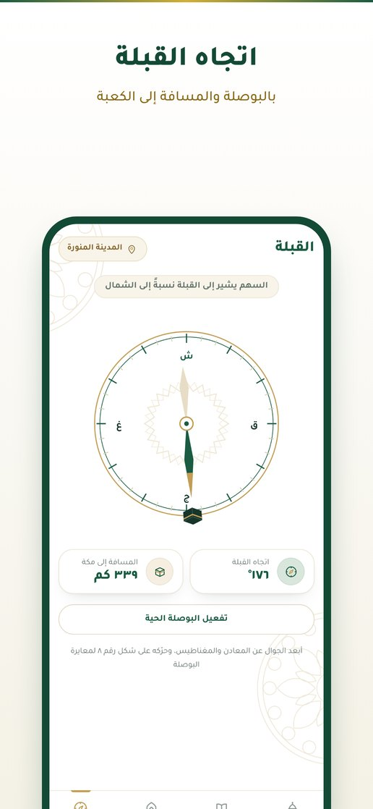
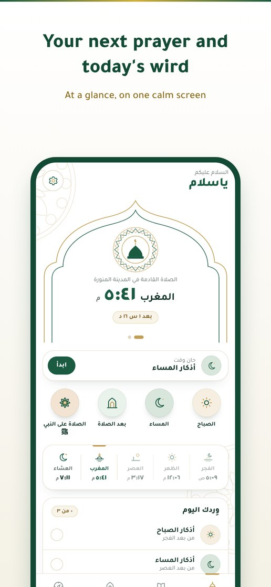
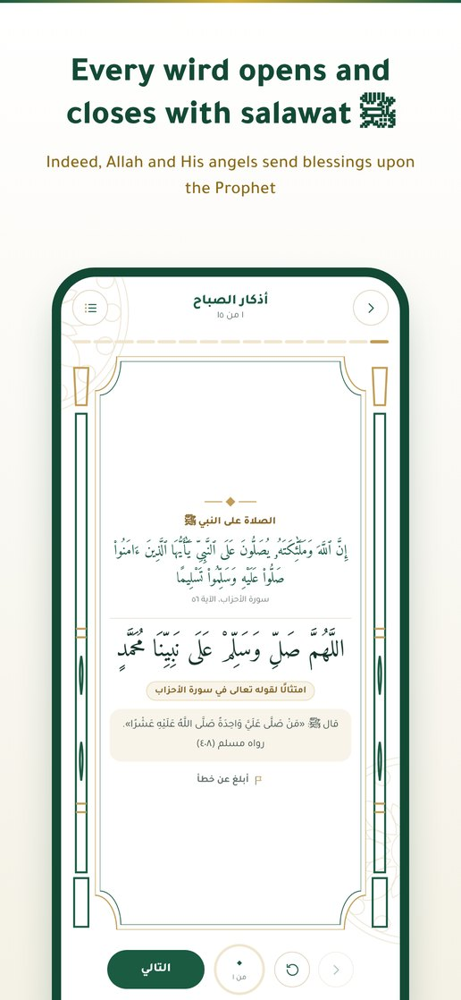
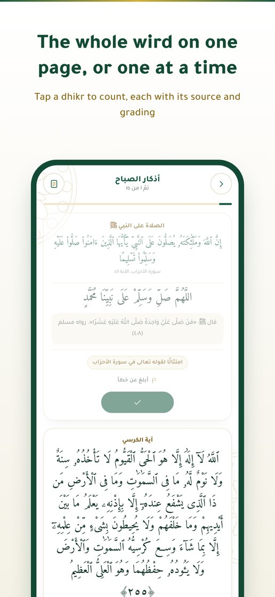
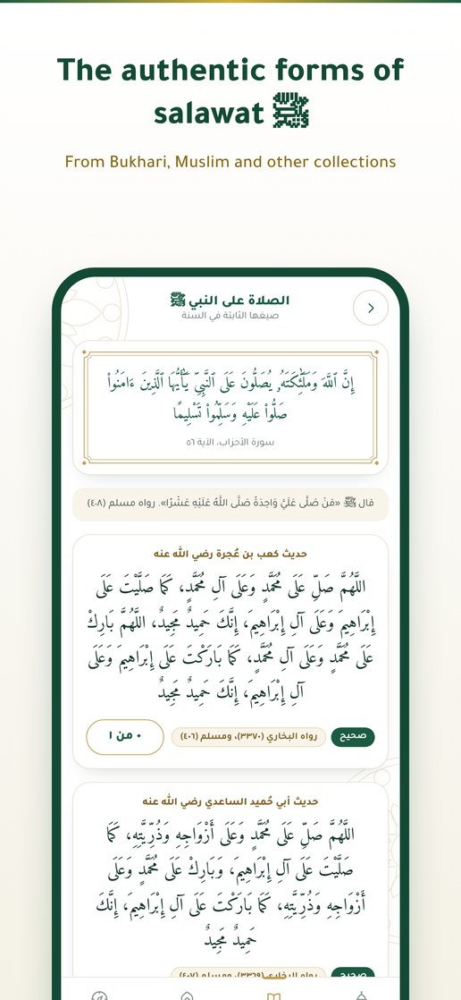
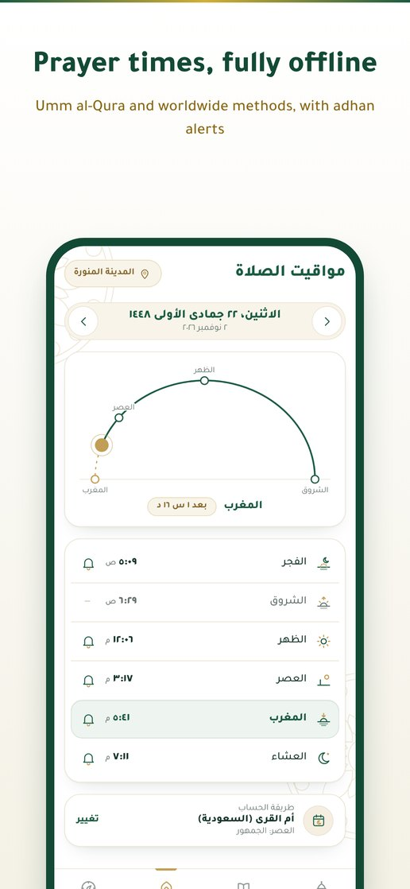
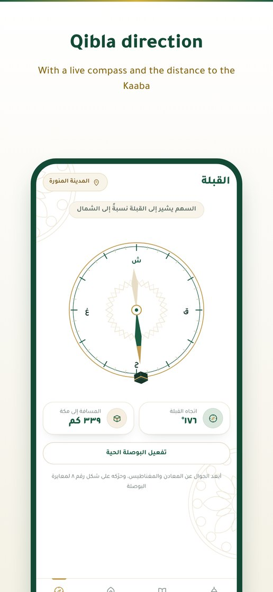
ما الذي يميّز ياسلام؟What makes YaSalam different?
بالعربي أولاً، ولكل مسلم حول العالم.Arabic first, for Muslims everywhere.
يبدأ ويُختم بالصلاة على النبي ﷺOpens and closes with salawat ﷺ
كل ورد يُفتتح بالصلاة على النبي ﷺ ويُختم بالصلاة الإبراهيمية.Every wird begins with salawat upon the Prophet ﷺ and ends with the Ibrahimi salawat.
صيغ الصلاة على النبي ﷺAuthentic forms of salawat
الصيغ الثابتة في الصحيحين وغيرهما، مع المصدر وعدّاد لكل صيغة. ولكل ذكر زر «أبلغ عن خطأ»، وكل تصحيح يُعلن في سجل داخل التطبيق.The forms from Bukhari, Muslim and other collections, each with its source and counter. Every dhikr has a "Report a mistake" button, and every fix is listed in a log inside the app.
أذكار اليوم كاملةEvery daily adhkar
الصباح والمساء وبعد الصلاة والنوم والاستيقاظ: ذكرًا بذكر بملء الشاشة أو الوِرد كاملًا في صفحة، وتعدّ بلمسة على الذكر.Morning, evening, after prayer, sleep and waking: one dhikr at a time, full screen, or the whole wird on one page. Tap the dhikr to count.
مواقيت بدون إنترنتOffline prayer times
أم القرى ورابطة العالم الإسلامي والهيئة المصرية وISNA وديانت وغيرها، مع تنبيه الأذان.Umm al-Qura, MWL, Egypt, ISNA, Diyanet and more, with adhan alerts for the prayers you choose.
القبلةQibla
اتجاه القبلة بالبوصلة، والمسافة إلى الكعبة المشرفة.The Qibla direction with a live compass, and the distance to the Kaaba.
ودجت وسبحةWidget and tasbih
الصلاة القادمة مع العدّ التنازلي على الشاشة الرئيسية، وفي رمضان السحور والإفطار، وسبحة تعدّ بلمسة دون فتح التطبيق.The next prayer with a countdown on your home screen, suhoor and iftar in Ramadan, and a tasbih that counts without opening the app.
مجاني بالكامل، بلا إعلانات وبلا مقاطعةCompletely free, no ads, no interruptions
لا حساب ولا خوادم: موقعك وأورادك تبقى على جهازك. ومن أحب أن يدعم المطوّر يجد صفحة «ادعم المطوّر» داخل الإعدادات فقط.No account and no servers: your location and progress stay on your phone. If you'd like to support the developer, there's a "Support the developer" page inside Settings only.